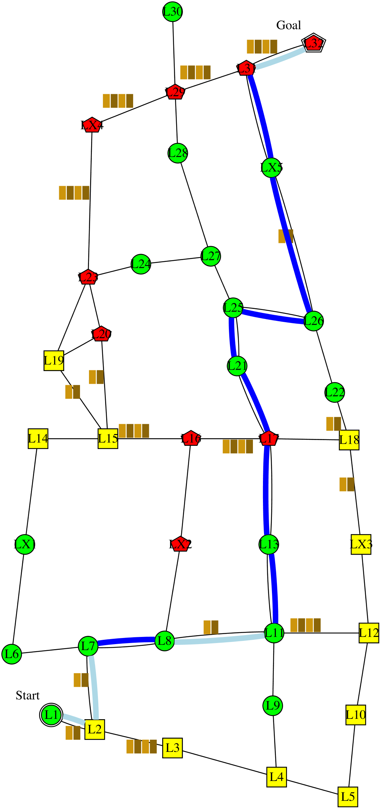
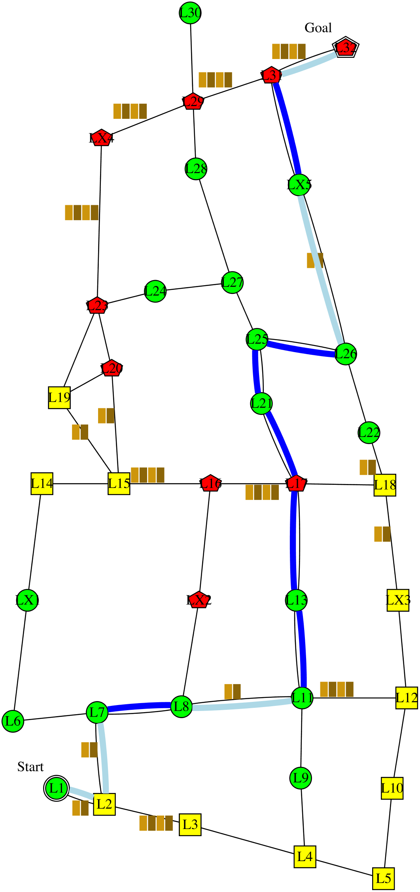

I'm planning to follow this policy . It is expected to have 0 collision; take 193 minutes; and have intrusiveness-penalty of 10: be non-intrusive 8 steps, very-intrusive 3 steps, and somewhat-intrusive 1 step. It has the lowest expected intrusiveness, and collision. Alternatively, following this policy  would reduce the time to 190 minutes. However, I didn't choose that policy because it would increase the collision to 0.2 collision. The decrease in time is not worth the increase in collision.